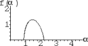
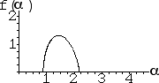
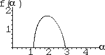
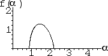
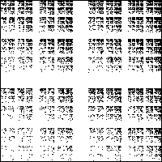

(c)
(c) (f)
(f)
| 10. The f(α) curves (a) and (b) have maximum value near 2, while the f(α) curve for (c) has a much lower maximum value. The maximum value of the f(α) curve is the dimension of the underlying attractor, so f(α) curve (c) corresponds to IFS (f), the one with the lowest dimension. |
| For the other two, recall the range of the α values corresponds to the range of the probabilities. For (b), the α range is small, so the range of the probabilities is small. That is, the probabilities are approximately equal, so the approximately uniformly filled-in IFS (e) corresponds to f(α) curve (b). |
| For (a), the α range is large, so the range of the probabilities is large. That is, some probabilities are high, others are low equal, so variation of the fill of IFS (d) suggests it corresponds to f(α) curve (a). |
| (a)
(b)
(c) |
| (d)
(e)
(f) |
Return to Homework 5 Practice.